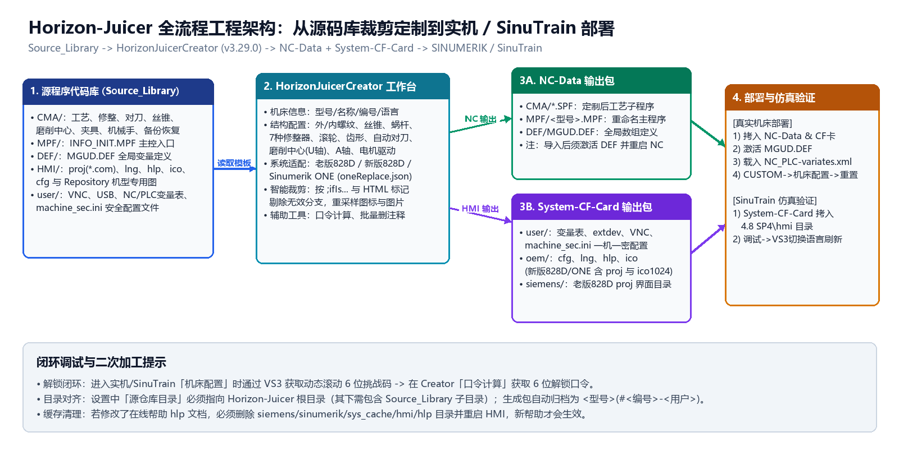

Horizon-Juicer 数控螺纹磨床系统与程序生成器完全指南
欢迎使用 Horizon-Juicer 完整用户与调试手册。本手册整合了上游工程配置生成工具 HorizonJuicerCreator（v3.29.0） 与下游西门子 SINUMERIK 数控磨床标准工艺软件库 Horizon-Juicer（Source_Library） 的全部操作说明、参数定义、配置联动逻辑、仿真调试及故障排查方法。

1. 适用对象与阅读建议
| 读者角色 | 重点阅读章节 | 核心目标 |
|---|---|---|
| 软件选型 / 项目工程师 | 第 1 章 ～ 第 3 章 | 掌握工作路径配置、按机械结构裁剪生成专用 NC/HMI 程序包、清理注释及计算动态解锁口令 |
| 电气调试 / 售后工程师 | 第 4 章、第 5 章、第 8 章、第 10 章 | 完成 CF 卡/网络部署与 SinuTrain 仿真验证，配置机床底层选项、自动对刀标定、报警与 PLC 信号排障 |
| 机床操作 / 工艺工程师 | 第 5 章 ～ 第 9 章 | 熟练操作磨削、工艺、修整、滚轮校准、齿形设定、丝锥/蜗杆/环形槽、多段补偿及磨削中心复合加工 |
2. 支持的数控系统平台与软件版本
- 配置生成软件：
HorizonJuicerCreator.exe（当前文档对应版本：V3.29.0），基于 Qt 桌面端开发，配置文件持久化于当前系统用户目录~/HorizonJuicerCreator.json。 - 支持的目标数控系统：
- SINUMERIK 828D（老版）：使用
siemens系统层级目录与ico800图标集，兼容 SinuTrain840D sl 4.8 SP4仿真预览。 - SINUMERIK 828D（新版）：使用
oem系统层级目录与ico1024（1024×768/1280×768）高清界面图标集。 - SINUMERIK ONE：自动启用
oneReplace.json规则集，将老架构$A_DBB[...]信号映射为$A_IN[...]/digitInpVal等新平台接口，并适配DB10.DBX107.0/1及1170×600宽屏ico1024图示资源。 - SINUMERIK 840D sl / SinuTrain 4.8 SP4 仿真环境：支持将生成包内
System-CF-Card目录直接导入仿真hmi目录，实现真机同款界面联动预览与调试。
- SINUMERIK 828D（老版）：使用
3. 全书结构总览
- 第一部分：HorizonJuicerCreator 配置生成软件指南（第 1～3 章）
- 介绍工作台界面、源码库路径规范、机床机械/电气配置全矩阵、输出目录与
specificationInfo编码、口令计算器与批量去注释工具。
- 介绍工作台界面、源码库路径规范、机床机械/电气配置全矩阵、输出目录与
- 第二部分：程序部署与系统管理（第 4～5 章）
- 介绍真机 NC/CF 卡部署、GUD 内存参数校验（
MD18120）、USB 逻辑驱动器、SinuTrain 仿真及文本缓存刷新、CUSTOM主页、机床系统密码解锁配置、加工统计/配件寿命与参数备份恢复。
- 介绍真机 NC/CF 卡部署、GUD 内存参数校验（
- 第三部分：Horizon-Juicer 机床操作与工艺功能指南（第 6～9 章）
- 深入剖析外螺纹/内螺纹主磨削流程、精简/扩展工艺表、丝锥/蜗杆/环形槽及变径/分段/多螺距/反向孔倒角高级模块、砂轮修整与滚轮校准、通用齿形与双圆弧公式、自动对刀标定、磨削中心复合外圆/端面/台阶加工。
- 第四部分：附录与故障排查（第 10 章）
- 汇总全套报警代码对照表、全量 M 代码与 PLC-NC 交互信号、全量配置界面对应变量表、全量全局变量与 R 参数索引表、全量条件编译与 Sinumerik ONE 跨平台替换标记索引。
索引基准提醒：西门子 EasyScreen
.com界面脚本对 NC 数组采用 1-based 索引（如INI[17]），而 NC 子程序*.SPF、MGUD.DEF与Parameter_Index.md采用 0-based 索引（对应INI[16]）。阅读参数对照表时请注意区分 NC 索引 与 HMI 索引（NC + 1）。
4. 新机首次投产与日常换型标准路线图（SOP 速查）
新机交付调试或现场批量换型时，推荐严格按以下 7 步标准作业链路 依次推进（点击章节链接直达操作细则）：
- 生成定制程序包：在
HorizonJuicerCreator核对机床型号、修整器构型、自动对刀/磨削中心及主轴驱动方式（第 2 章 机床配置与程序生成），一键导出NC-Data与System-CF-Card； - 部署激活与初始化：按先
MGUD.DEF、再CMA/*.SPF与<机床型号>.MPF的顺序导入真机并拷入System-CF-Card（4.1 真机部署流程）； - 口令解锁与配置重置（必做）：用 3.1 口令计算器 解锁 CUSTOM → 机床配置，立即点击
VS3 重置数据 → Mask2 VS8 确认写入驱动与权限基线（5.2 机床系统配置）； - 滚轮校准与新砂轮成型修整：在
HS3 修整参数标定修整中心/修整中心距，切为0 新砂轮修出完整标准/双圆弧或平面轮廓（7.1 修整主参数、7.2 滚轮校准）； - 工件对刀寻位：填写螺距/旋向/左右端坐标后，按需执行
手动对刀 + DRF（6.1 手动对刀操作）或自动对刀测头/开关标定（8.1 外螺纹对刀、8.2 内螺纹与中心对刀）； - 四道工序试磨与尺寸补偿：在
HS2 工艺参数调整粗/半精/精/终磨余量与修整间隔（6.2 工艺参数表），试磨首件并用中径调整/偏刀调整或分段补偿收敛精度； - 参数备份归档：试产合格后在 CUSTOM →
VS2 备份恢复导出整机工艺快照，并务必将模式选择切回0 加工（5.4 参数备份与恢复）。